不是禁止，
也不是放任
我们不主张一刀切地没收孩子手机，也不支持毫无边界的放纵。 最好的解法，是在理解与沟通中取得共识，帮助孩子慢慢长出自律。
看见世界，
也需要边界
完全阻断，孩子可能错过理解这个时代的窗口；毫无约束，又容易在游戏和短视频里迷失节奏。
把管理变成
温柔的约定
和孩子一起商量：哪些时间该学习，哪些应用可以玩、可以玩多久，再把共识变成清晰可执行的规则。
不是为了监视，
是为了理解
使用时长数据不是为了监控，而是为亲子沟通提供客观起点，理解孩子的兴趣所在。
拉钩，是孩子对我们的承诺，
更是我们对孩子的守护。
这是什么工具
拉钩守护是一个面向家长的本地守护工具，帮助你管理孩子手机中的娱乐应用使用时长。
家长可以为短视频、游戏等应用添加限制规则，孩子使用时触发本地拦截与提醒。
为什么现在测试
不同安卓品牌在自启动、后台活动、电池限制上的差异很大，真实家庭环境比实验环境更能暴露问题。
你会帮到什么
你的反馈会帮助我们确认哪些机型最稳定、哪些设置最容易卡住，以及哪些绕过路径最真实。
选择你的手机品牌
按专属指引完成安装
不同品牌安卓手机的权限路径、后台保活设置差异极大，请点击你孩子手机的对应品牌，按该品牌的专属指引逐步完成。整个流程约 10–15 分钟。
小米 小米 / Redmi / POCO（HyperOS / MIUI）
第一阶段 · 通用权限准备（约 5 分钟）
下载 APK
本应用未上架应用商店，需从本页下载安装包。小米浏览器为系统默认浏览器。
- 在小米浏览器中打开本页面，点击下方「下载测试版」。如在微信中打开，请点击右上角三个点图标，再点击「用浏览器打开」，跳转到小米浏览器后再下载。
- 点击下载后，小米浏览器可能弹出「该应用未经小米安全审核」—— 这是小米对未上架应用商店的所有应用的通用提示，并不代表应用本身有问题，按提示操作继续下载即可。
- 如浏览器提示「禁止安装未知应用」→ 点击「设置」→ 找到「浏览器」或「小米浏览器」→ 开启「允许安装来源」。
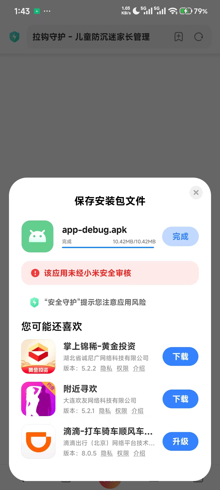
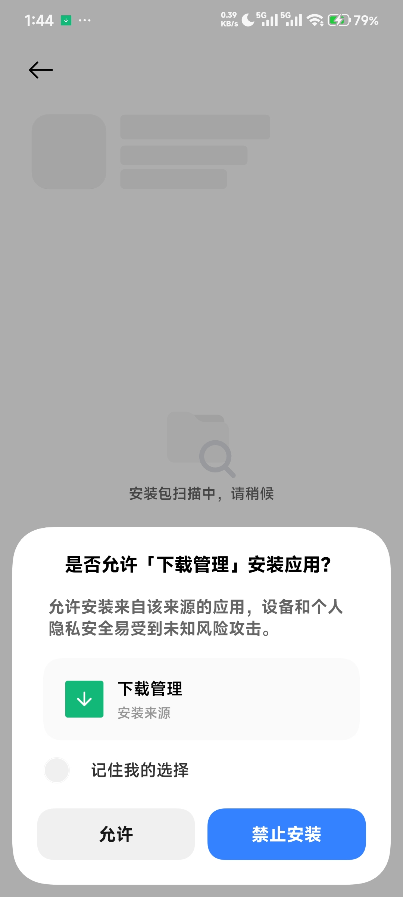
安装 APK
下载完成后开始安装。小米系统会连续弹出多个安全提示，均属正常现象，请按顺序处理。
- 下载完成后下拉通知栏点击「下载完成」的 APK，或打开「文件管理 → 下载」分类找到
app-debug.apk点击安装。 - 弹出「了解此应用未经安全检测」页面 → 勾选「我已了解并知晓可能产生的风险」（必须勾选才能继续，部分机型需等待倒计时结束按钮才可点击）→ 点击「继续安装」。
- 弹出「第三方应用安装警告」→ 选择「继续安装」或「仍然安装」。
- 弹出「未查询到此应用的 ICP 备案信息」→ 本应用测试阶段尚未备案，不影响使用，点击「继续安装」即可。
- 如系统要求输入小米账号密码验证身份，输入后继续安装。
- 等待安装完成，点击「打开」。
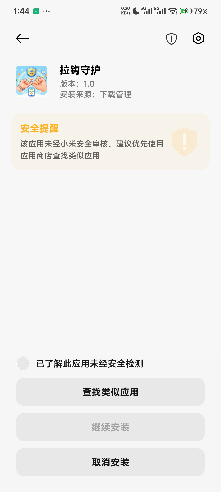
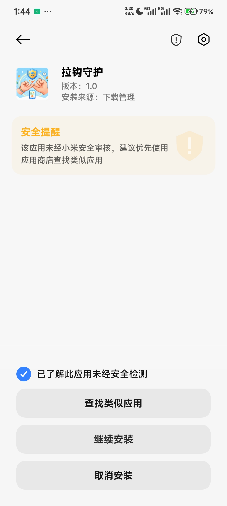
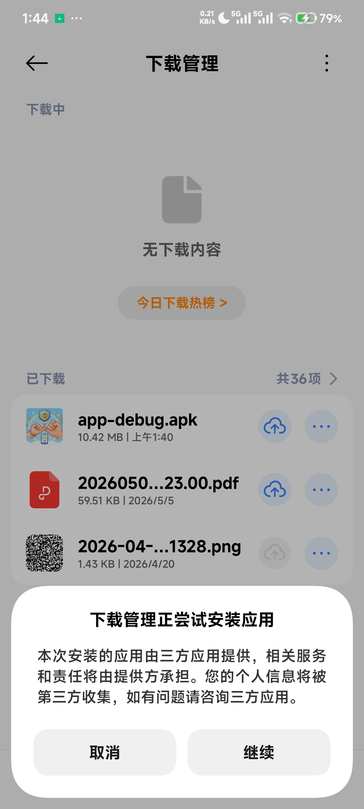
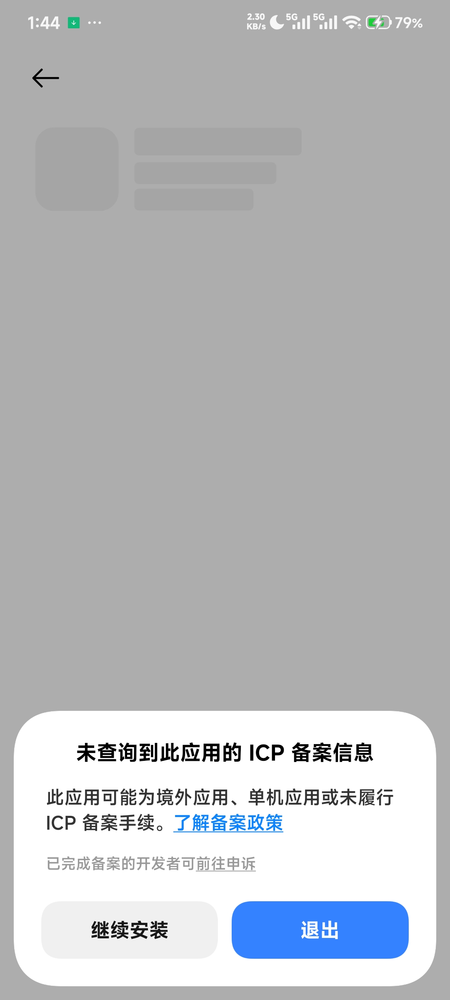
桌面出现「拉钩守护」图标并能打开。
设置家长密码
用于修改规则、卸载应用、紧急解锁。遗忘后可通过客服提供的当日恢复码重设，手机无需联网。
- 首次打开自动进入向导，第一项「设置家长密码」→ 点击「去设置家长密码」。
- 输入 6 位数字密码（避免生日、123456），再次输入确认。
向导该项显示「已设置」。
开启悬浮窗权限
用于显示拦截遮罩。不开则拦截看不见。
- 向导点击「去开启悬浮窗」→ 跳转到「其他权限管理 → 显示悬浮窗」页。
- 找到「拉钩守护」→ 选择「允许」。
- 返回应用确认该项显示「已开启」。
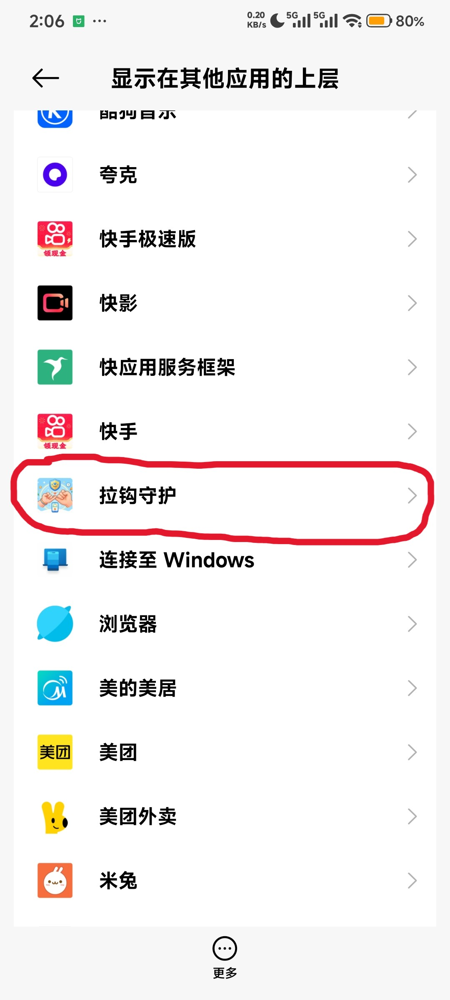
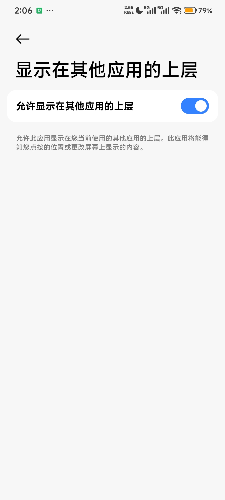
开启使用情况访问权限
用于读取孩子打开了哪个应用、用了多久。
- 向导点击「去开启使用情况访问」→ 跳转到「特殊权限 → 使用情况访问」。
- 找到「拉钩守护」→ 开启开关。
- 系统弹出安全警告 → 勾选「我已知晓可能产生的风险」（部分机型需等待倒计时结束）→ 点击「确定」。
- 返回应用确认状态。
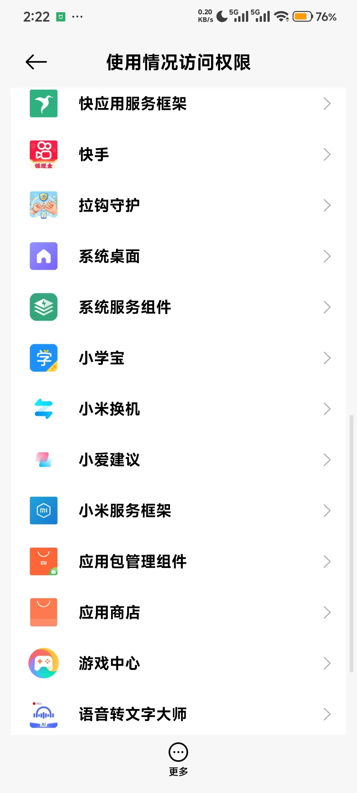
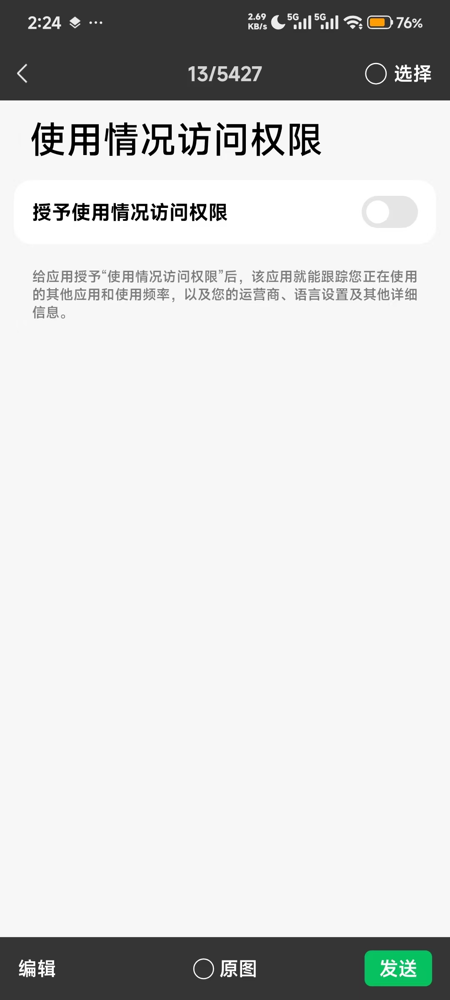
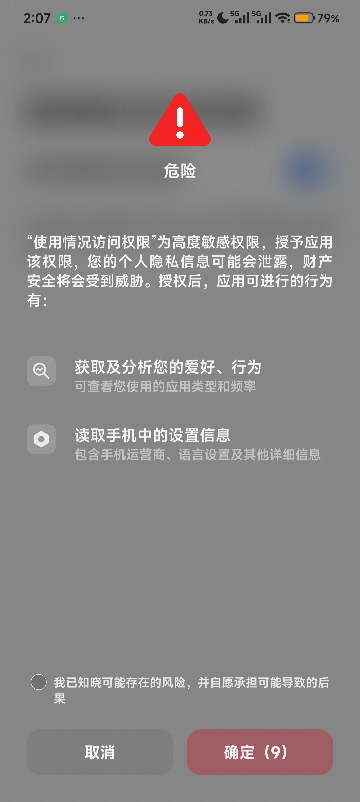
第二阶段 · 小米专有后台保活（重点 · 约 5 分钟）
小米系统对第三方后台应用限制最严格，这一阶段是拦截失效的最大原因。务必逐项完成。
忽略电池优化
- 向导点击「去设置电池优化」→ 弹窗选「允许」。
- 这一步只是 Android 通用层，下面的小米专有省电策略更关键。
后台自启动
开机或被系统回收后能否自动恢复守护。
- 路径：
系统设置 → 应用 → 权限管理 → 后台自启动 - 找到「拉钩守护」→ 开启开关。
也可长按桌面图标 → 应用信息 → 自启动 → 允许。
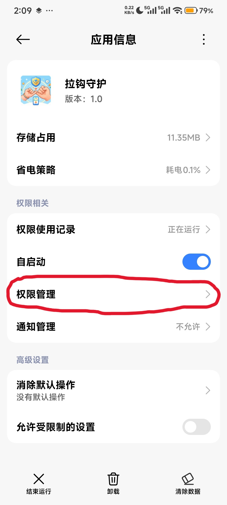
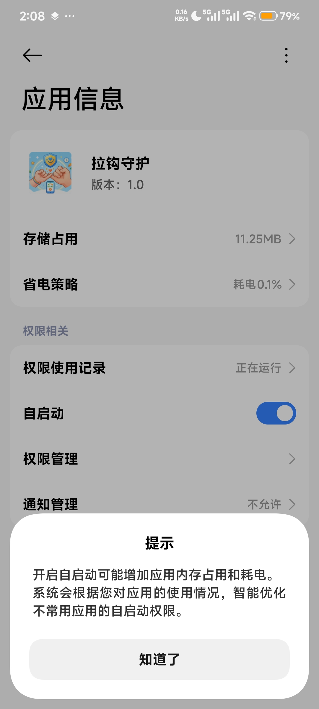
省电策略设为「无限制」
避免小米因省电冻结或杀死后台服务。与第 6 步不是一回事，需分别完成。
- 路径：
系统设置 → 应用 → 应用管理 → 拉钩守护 → 省电策略（部分版本叫「电量消耗」或「电池」） - 选择「无限制」。
若找不到，在系统设置搜索「省电策略」。
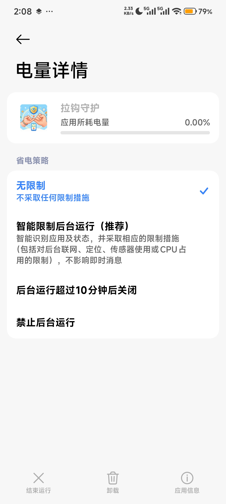
后台弹出界面
用于增强后台恢复与拦截遮罩的可达性。优先级低于无障碍，但建议开启。
- 路径：
长按「拉钩守护」桌面图标 → 应用信息 → 权限管理 → 其他权限 → 后台弹出界面 - 选「允许」。
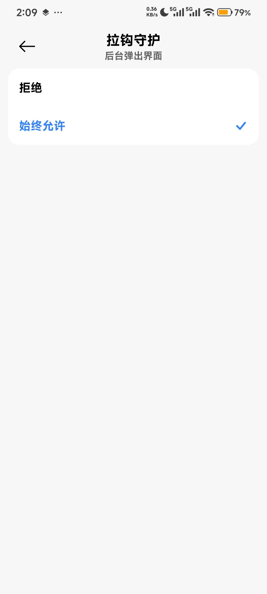
最近任务锁定
降低「一键清理」时被清除的概率。
- 打开「拉钩守护」→ 进入最近任务页。
- 长按「拉钩守护」卡片，或下拉卡片。
- 点击锁形图标，确认卡片上有锁定标记。
第三阶段 · 开启无障碍服务（最关键 · 最后做）
开启无障碍服务
无障碍服务用于识别孩子打开了哪个应用并触发拦截，是整个守护能否工作的核心开关。必须放在所有小米专有设置之后。
- 向导点击「去开启无障碍服务」→ 跳转到无障碍服务列表。
- 找到「拉钩守护」（在「已下载的应用」或「更多已下载的服务」下）→ 点击进入。
- 开启开关 → 系统弹出安全警告 → 勾选「我已知晓可能产生的风险」（部分机型需等待倒计时结束）→ 点击「确定」。
- 返回应用确认显示「已运行」。
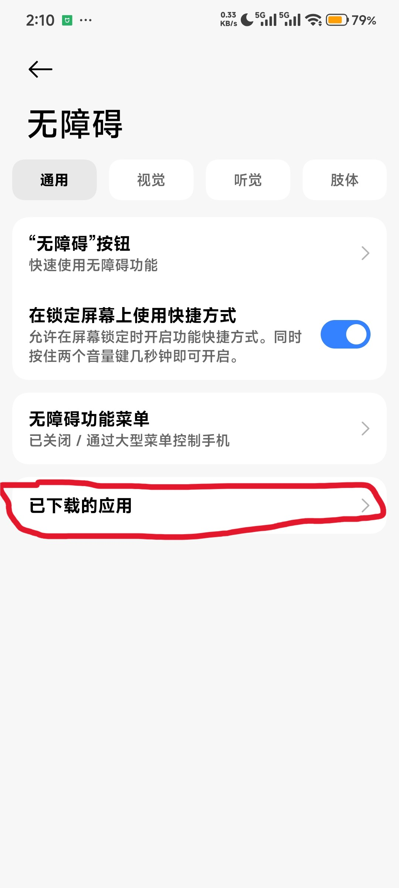
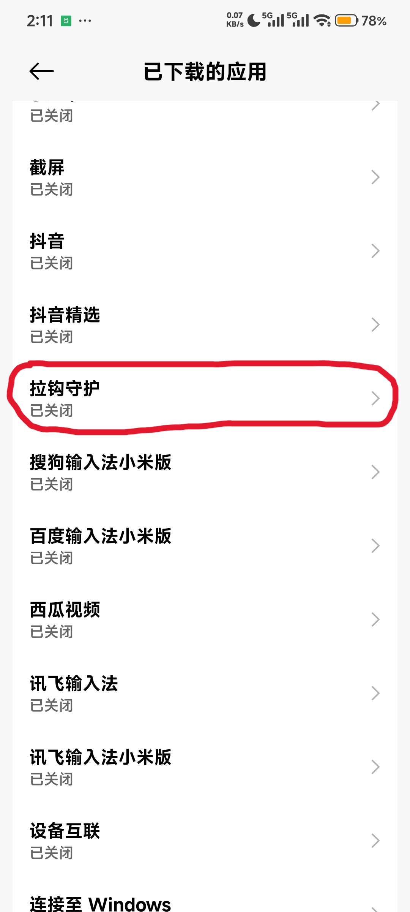
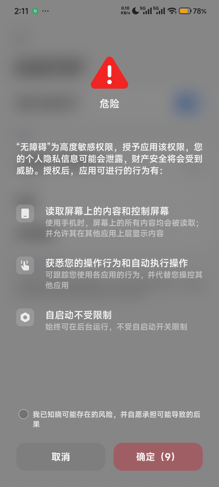
第四阶段 · 添加规则并现场验证
添加第一条规则并立即验证
- 主界面进入「应用规则」→ 点击「+」。
- 选一个孩子常用的娱乐应用（如抖音、和平精英、B 站）。
- 选「完全禁用」或「限制使用时长」（如每天 30 分钟）。
- 保存后立即打开该应用，应看到全屏拦截遮罩。
打开受限应用时立刻被全屏遮罩挡住。
荣耀 荣耀 / 华为（HarmonyOS / Magic OS / EMUI）
第一阶段 · 通用权限准备（约 5 分钟）
下载 APK 并允许「未知来源」安装
本应用未上架应用商店。华为/荣耀浏览器为系统默认浏览器。
- 在浏览器中打开本页面，点击下方「下载测试版」。
- 提示「禁止安装未知应用」→ 点击「设置」→ 找到浏览器（如「浏览器」「华为浏览器」）→ 开启「允许安装来源」。
- 下载完成后下拉通知栏点击 APK，或打开「文件管理 → 下载」找到
app-debug.apk点击安装。 - HarmonyOS 可能弹出「纯净模式」拦截 → 选择「仍要安装」或先在「应用市场 → 我的 → 设置」关闭「纯净模式」。
桌面出现「拉钩守护」图标并能打开。
设置家长密码
用于修改规则、卸载应用、紧急解锁。遗忘后可通过客服提供的当日恢复码重设，手机无需联网。
- 首次打开自动进入向导，第一项「设置家长密码」→ 点击「去设置家长密码」。
- 输入 6 位数字密码，再次输入确认。
开启悬浮窗权限
- 向导点击「去开启悬浮窗」→ 跳转到悬浮窗权限页。
- 找到「拉钩守护」→ 开启开关。
- 返回应用确认显示「已开启」。
开启使用情况访问权限
- 向导点击「去开启使用情况访问」→ 跳转到使用情况访问页。
- 找到「拉钩守护」→ 开启开关。
- 返回应用确认状态。
第二阶段 · 荣耀/华为专有后台保活（重点 · 约 5 分钟）
HarmonyOS 对后台应用限制较严，这一阶段是拦截失效的最大原因。
应用启动管理（关键）
华为/荣耀独有的「应用启动管理」会限制自启动、关联启动、后台活动。必须手动三开。
- 路径：
系统设置 → 应用 → 应用启动管理 - 找到「拉钩守护」→ 关闭「自动管理」。
- 弹出手动管理面板 → 勾选「允许自启动」「允许关联启动」「允许后台活动」三项。
- 点击「确定」。
该项显示「手动管理」且三项全开。
忽略电池优化 + 电池优化白名单
- 向导点击「去设置电池优化」→ 弹窗选「允许」。华为/荣耀机型可能先跳到「手机管家」的「应用启动管理」，请按上一步完成。
- 再进入
系统设置 → 应用 → 拉钩守护 → 耗电详情 → 启动管理，确认选「手动管理」并全部允许。
锁屏清理白名单
避免锁屏后被系统清理。
- 打开「手机管家」→ 右上角设置图标。
- 找到「锁屏清理应用白名单」或「锁屏清理应用」。
- 把「拉钩守护」加入白名单。
最近任务锁定
- 打开「拉钩守护」→ 进入最近任务页。
- 下拉「拉钩守护」卡片，出现锁定图标。
第三阶段 · 开启无障碍服务（最关键 · 最后做）
开启无障碍服务
无障碍服务是整个守护能否工作的核心开关。必须放在所有专有设置之后。
- 向导点击「去开启无障碍服务」→ 跳转到无障碍服务列表。
- 找到「拉钩守护」→ 点击进入 → 开启开关 → 二次确认。
- 返回应用确认显示「已运行」。
第四阶段 · 添加规则并现场验证
添加第一条规则并立即验证
- 主界面进入「应用规则」→ 点击「+」。
- 选一个孩子常用的娱乐应用（如抖音、和平精英、B 站）。
- 选「完全禁用」或「限制使用时长」（如每天 30 分钟）。
- 保存后立即打开该应用，应看到全屏拦截遮罩。
打开受限应用时立刻被全屏遮罩挡住。
OPPO OPPO / 一加 / realme（ColorOS）
第一阶段 · 通用权限准备（约 5 分钟）
下载 APK 并允许「未知来源」安装
- 在浏览器中打开本页面，点击下方「下载测试版」。
- 提示「禁止安装未知应用」→ 点击「设置」→ 找到浏览器 → 开启「允许安装来源」。
- 下载完成后下拉通知栏点击 APK，或打开「文件管理 → 下载」找到
app-debug.apk点击安装。 - ColorOS 可能弹出「风险应用提示」→ 选择「继续安装」。
桌面出现「拉钩守护」图标并能打开。
设置家长密码
遗忘后可通过客服提供的当日恢复码重设，手机无需联网。
- 首次打开自动进入向导，第一项「设置家长密码」→ 点击「去设置家长密码」。
- 输入 6 位数字密码，再次输入确认。
开启悬浮窗权限
- 向导点击「去开启悬浮窗」→ 跳转到悬浮窗权限页。
- 找到「拉钩守护」→ 开启开关。
- 返回应用确认显示「已开启」。
开启使用情况访问权限
- 向导点击「去开启使用情况访问」→ 跳转到使用情况访问页。
- 找到「拉钩守护」→ 开启开关。
- 返回应用确认状态。
第二阶段 · OPPO 专有后台保活（重点 · 约 5 分钟）
自启动管理
开机或被回收后能否自动恢复守护。
- 路径：
系统设置 → 应用管理 → 自启动管理 - 找到「拉钩守护」→ 开启开关。
忽略电池优化 + 后台运行
- 向导点击「去设置电池优化」→ 弹窗选「允许」。
- 进入
系统设置 → 电池 → 应用耗电管理 → 拉钩守护 - 开启「允许后台运行」，关闭「睡眠待机优化」或选「不优化」。
最近任务锁定
- 打开「拉钩守护」→ 进入最近任务页。
- 下拉「拉钩守护」卡片至上锁状态。
第三阶段 · 开启无障碍服务（最关键 · 最后做）
开启无障碍服务
无障碍服务是整个守护能否工作的核心开关。必须放在所有专有设置之后。
- 向导点击「去开启无障碍服务」→ 跳转到无障碍服务列表。
- 找到「拉钩守护」→ 点击进入 → 开启开关 → 二次确认。
- 返回应用确认显示「已运行」。
第四阶段 · 添加规则并现场验证
添加第一条规则并立即验证
- 主界面进入「应用规则」→ 点击「+」。
- 选一个孩子常用的娱乐应用（如抖音、和平精英、B 站）。
- 选「完全禁用」或「限制使用时长」（如每天 30 分钟）。
- 保存后立即打开该应用，应看到全屏拦截遮罩。
打开受限应用时立刻被全屏遮罩挡住。
vivo vivo / iQOO（OriginOS / Funtouch OS）
第一阶段 · 通用权限准备（约 5 分钟）
下载 APK 并允许「未知来源」安装
- 在浏览器中打开本页面，点击下方「下载测试版」。
- 提示「禁止安装未知应用」→ 点击「设置」→ 找到浏览器 → 开启「允许安装来源」。
- 下载完成后下拉通知栏点击 APK，或打开「文件管理 → 安装包」找到
app-debug.apk点击安装。 - OriginOS 可能弹出「风险提示」→ 选择「继续安装」。
桌面出现「拉钩守护」图标并能打开。
设置家长密码
遗忘后可通过客服提供的当日恢复码重设，手机无需联网。
- 首次打开自动进入向导，第一项「设置家长密码」→ 点击「去设置家长密码」。
- 输入 6 位数字密码，再次输入确认。
开启悬浮窗权限
- 向导点击「去开启悬浮窗」→ 跳转到悬浮窗权限页。
- 找到「拉钩守护」→ 开启开关。
- 返回应用确认显示「已开启」。
开启使用情况访问权限
- 向导点击「去开启使用情况访问」→ 跳转到使用情况访问页。
- 找到「拉钩守护」→ 开启开关。
- 返回应用确认状态。
第二阶段 · vivo 专有后台保活（重点 · 约 5 分钟）
自启动 + 后台弹出活动
vivo 独有的「自启动」与「后台弹出活动」两项。
- 路径：
系统设置 → 应用 → 自启动 - 找到「拉钩守护」→ 开启「允许自启动」和「允许后台弹出活动」两个开关。
忽略电池优化 + 高耗电允许后台运行
- 向导点击「去设置电池优化」→ 弹窗选「允许」。
- 打开「i 管家 → 省电管理 → 后台高耗电」→ 允许「拉钩守护」继续运行。
- 进入
系统设置 → 电池 → 后台耗电管理 → 拉钩守护→ 选「允许后台高耗电」。
最近任务锁定
- 打开「拉钩守护」→ 进入最近任务页。
- 长按「拉钩守护」卡片 → 点击锁形图标。
第三阶段 · 开启无障碍服务（最关键 · 最后做）
开启无障碍服务
无障碍服务是整个守护能否工作的核心开关。必须放在所有专有设置之后。
- 向导点击「去开启无障碍服务」→ 跳转到无障碍服务列表。
- 找到「拉钩守护」→ 点击进入 → 开启开关 → 二次确认。
- 返回应用确认显示「已运行」。
第四阶段 · 添加规则并现场验证
添加第一条规则并立即验证
- 主界面进入「应用规则」→ 点击「+」。
- 选一个孩子常用的娱乐应用（如抖音、和平精英、B 站）。
- 选「完全禁用」或「限制使用时长」（如每天 30 分钟）。
- 保存后立即打开该应用，应看到全屏拦截遮罩。
打开受限应用时立刻被全屏遮罩挡住。
找不到对应品牌？本应用当前测试范围重点覆盖上述 4 个品牌族群。若孩子手机是三星、魅族、联想等其他品牌，可参照「OPPO / 一加 / realme」面板完成通用步骤，品牌专有后台保活设置通常在「系统设置 → 电池」中能找到对应入口。
家里有儿童使用安卓手机 · 愿意按步骤配置权限 · 愿意反馈机型和失效情况
小米/Redmi · 华为/荣耀 · OPPO/一加/realme · vivo/iQOO
从这里开始
建议由家长本人完成首次配置 · 配置过程中请耐心完成所有权限页 · 遇到问题先截图再提交反馈
按清单完成
不漏关键场景
勾选记录进度，浏览器会自动保存（同一手机同一浏览器）。完成全部清单后再交给孩子日常使用。
阶段一 · 安装与首次配置
阶段二 · 日常使用稳定性（1–3 天）
阶段三 · 主动复现异常路径
勾选状态保存在浏览器本地，换浏览器或清缓存会丢失。
提交你的反馈
不用写很长，只要把关键上下文写全，我们就更容易复现问题。建议由家长本人完成首次配置 · 配置过程中请耐心完成所有权限页 · 遇到问题先截图再提交反馈
建议优先提供：手机品牌型号、系统版本、App版本、问题发生时间、异常类型、当时操作路径
遇到问题，随时联系
配置卡住、拦截失效、APK 下载失败，或任何拿不准的情况，都可以直接联系。
建议写明反馈优先渠道，以及紧急问题联系路径。
FAQ
安装时提示「禁止安装未知应用」或「未知来源」怎么办？
这是安卓系统的安全机制。在系统弹窗中点击「设置」→ 找到正在下载的浏览器（如「浏览器」「Chrome」「小米浏览器」）→ 开启「允许安装来源」或「允许来自此来源」。回到浏览器重新点击安装即可。每个浏览器只需授权一次。
下载下来的 APK 找不到了？
打开手机自带的「文件管理」→ 进入「下载」分类 → 找到名为 KidsPhoneGuard 或 app-debug.apk 的文件，点击即可安装。也可以在浏览器菜单的「下载内容」里直接打开。
为什么需要这些权限？
无障碍、悬浮窗、使用统计和电池优化豁免共同支撑识别前台应用、判断规则、显示拦截遮罩和尽量保持后台运行。少掉其中某一项，就可能出现识别不到应用或后台被系统杀死的情况。详细用途见上方「权限说明」。
无障碍服务总是「自己掉」怎么办？
这是安卓系统设计行为，不是 Bug。系统在省电、清理、应用信息页「结束运行」等场景都可能连带关闭无障碍。处理方法：① 打开「拉钩守护」→ 进入配置向导 → 点击「去开启无障碍服务」重新开启；② 若频繁掉线，请检查品牌后台保活设置是否全部完成（尤其是小米的省电策略、自启动、最近任务锁定）；③ 重启手机后请再次确认无障碍开关仍开启。
拦截遮罩没有出现怎么办？
按此顺序排查：① 打开「拉钩守护」向导，确认「无障碍服务」显示「已运行」（不只是「已开启」）；② 确认「悬浮窗」权限已开启；③ 确认规则类型是「完全禁用」或时长已用尽；④ 重启手机后再次开启无障碍；⑤ 仍不行请截图反馈。
孩子重启手机后守护就失效了？
开机后无障碍服务有时需要几秒到几十秒才会被系统重新绑定。请稍等片刻再试。若长时间未恢复，打开「拉钩守护」检查无障碍状态，必要时关闭再重新开启。小米/华为机型请同时检查品牌后台保活开关是否被系统重置。
小米/红米手机特别要注意什么？
小米系统对第三方后台应用限制最严格。除通用权限外，还必须完成「后台自启动」「省电策略设为无限制」「后台弹出界面」「最近任务锁定」四项。这些全部做完后，最后再开启无障碍服务。小米「手机管家」应用信息页里的「结束运行」会把无障碍一起杀掉。以后只要重新进入应用信息页调整设置，都要再次检查无障碍是否仍在运行。
家长密码忘了怎么办？
在密码验证页点击「忘记密码」，把页面显示的恢复设备号和计算日期报给客服。输入客服提供的 8 位当日恢复码后即可设置新密码，原有规则不会丢失，孩子手机不需要联网。
应用被孩子卸载了怎么办？
本应用已内置防卸载机制，孩子在系统设置或桌面尝试卸载时会被拦截。但若孩子通过「应用信息→强行停止→卸载」或在安全模式下操作仍可能绕过。建议家长定期检查应用图标是否存在。
应用图标在桌面找不到了？
请到应用列表（系统设置→应用→拉钩守护，或在桌面滑动到全部应用页）查找。如果确认已被卸载，请重新下载安装。本应用不会自动隐藏图标。
为什么不同品牌手机差异这么大？
厂商系统在自启动、后台活动、电池限制和最近任务上的处理差别很大，同样一套权限配置，在不同手机上的稳定性可能完全不同。这正是本轮测试需要重点覆盖小米、华为、OPPO、vivo 等品牌的原因。
这个工具能保证绝对无法绕过吗？
不能。当前阶段更现实的目标，是帮助家长建立有效规则，并收集真实的失败路径与系统限制。孩子若具备较强技术能力，仍可能通过安全模式、紧急拨号、adb 等途径绕过。本应用的目标用户是普通家庭场景。
下载按钮打不开怎么办？
这通常说明测试站还没有配置最新安装包链接，或旧链接已经失效。可以直接联系页面底部的测试联系人获取最新地址。
反馈会收集孩子的使用记录吗？
当前页面默认只收集家长主动填写的反馈内容。若后续接入线上接口，也应坚持最小化收集原则。本应用本体不会上传孩子的使用记录到任何服务器。